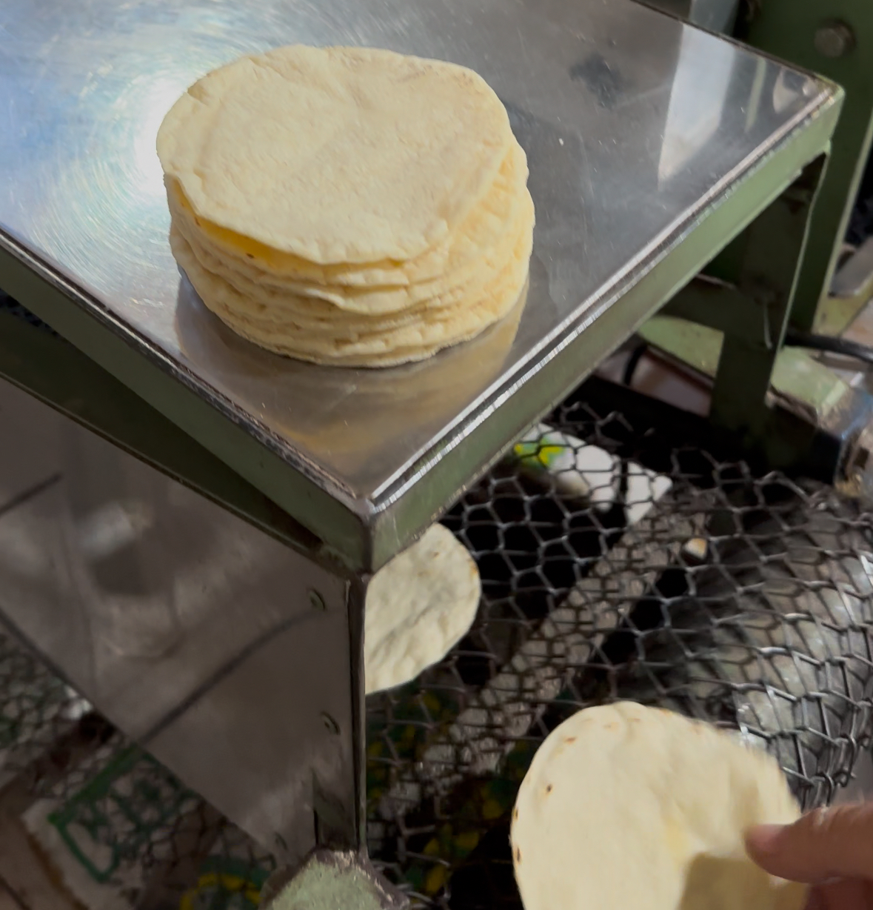
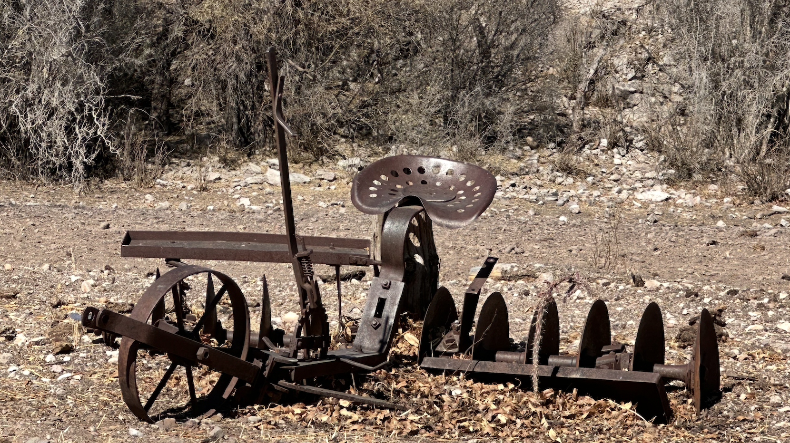
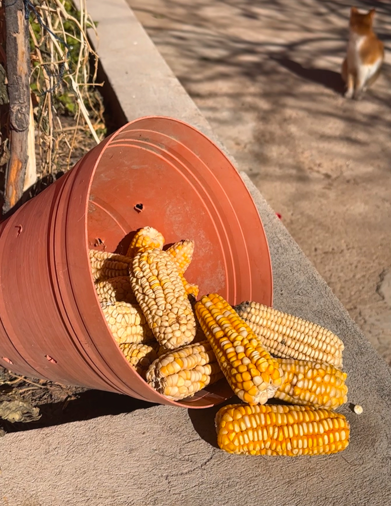
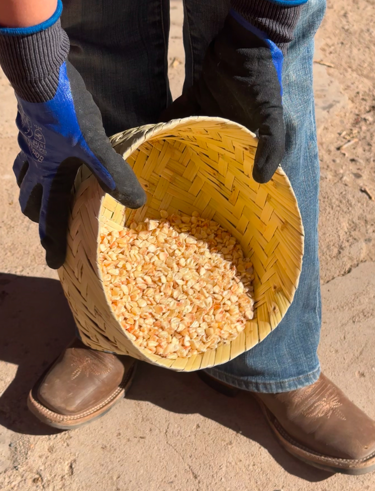
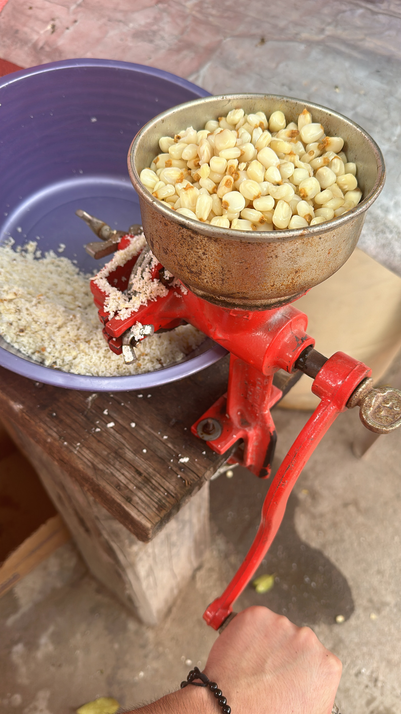
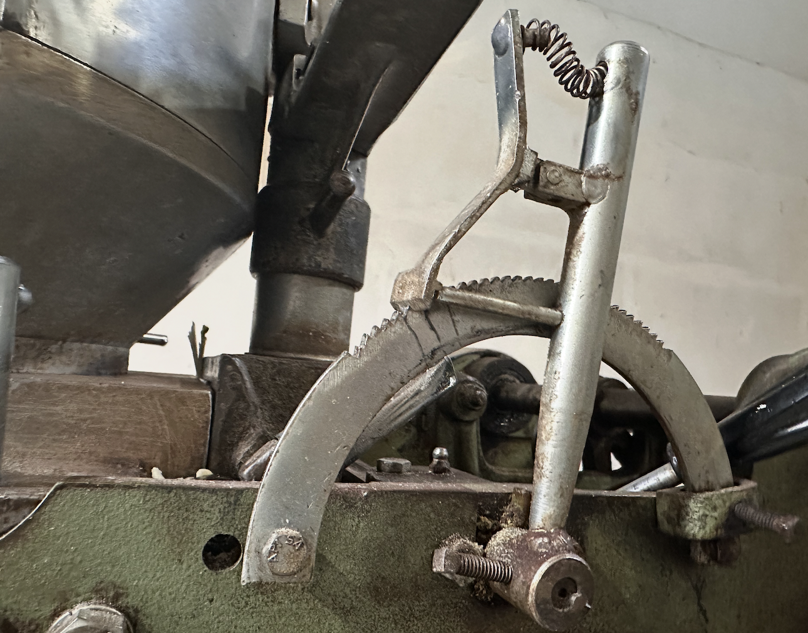
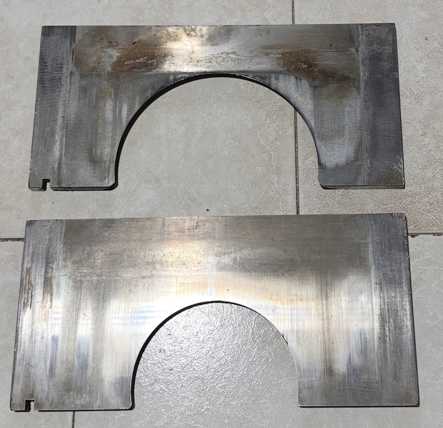
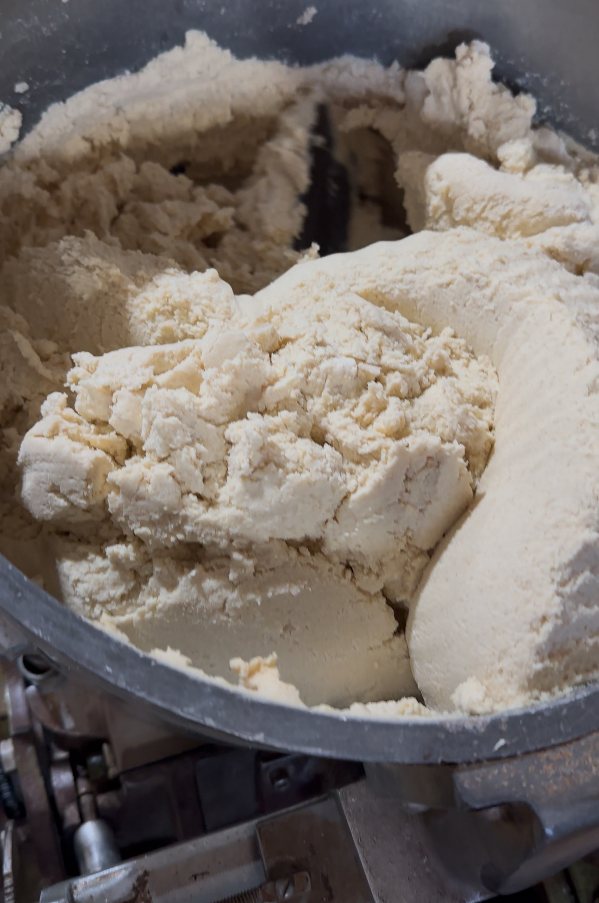
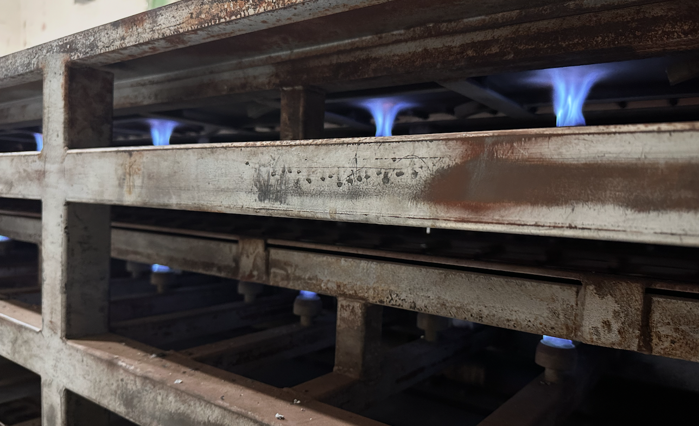
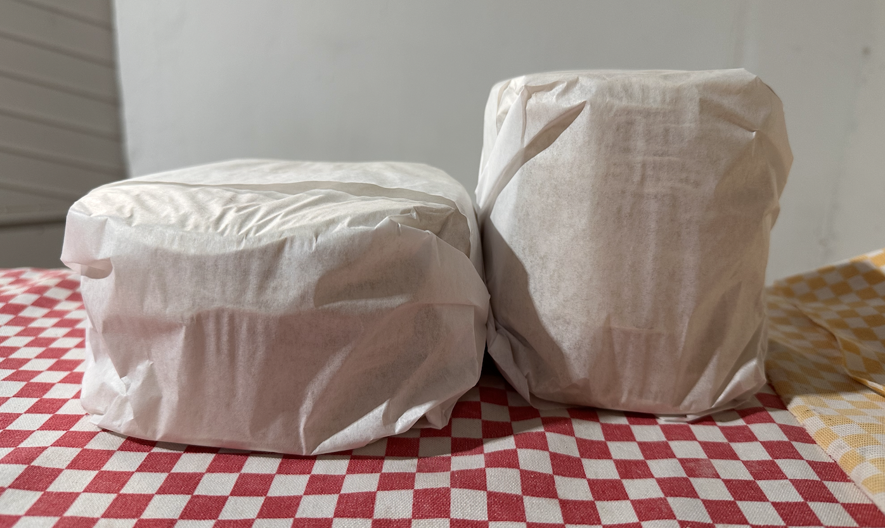

Tortilla origins
Few people know the process of making tortillas—from the planting and harvesting of corn to the production and sale of tortillas. This process brings true satisfaction to people like me, who have practiced the art of agriculture and sales, as well as to the oldest of my family members. I could share my experience with the advanced machinery we currently use on the ranch for harvesting, featuring New Holland technology. However, unlike any other informational source, this document will emphasize the traditional production process using ancient tools, known only to my grandparents and uncles. The goal is to help more people learn about the roots of one of the main staples of Mexican cuisine.
Raw materials
- Planting - Over 50 years ago, my grandfather used to plant corn in his plots, for which he had to wait for the right time of year. During the spring season, they prepared the “plow” by attaching it to a donkey to create furrows. Another person would then plant two to three corn kernels, spaced one step apart, to ensure proper growth. In those days, the rains were reliable, allowing the corn stalks, or “matas,” to grow successfully.
- Harvesting - When the corn stalks reached a height of approximately two meters, they bore fruit, known as corn cobs or "mazorcas." These were used in various ways, the most common being the process of shelling them to obtain pure corn kernels. They were also boiled and eaten in so many different ways.
Grain treatment
 The corn kernels must undergo a pre-cooking process followed by several washes.
- Pre-cooking - The corn kernels are cooked, usually outdoors, using firewood instead of gas. This method gives the kernels a rich, artisanal flavor. The kernels are cooked with a powder called white lime (cal blanca). After cooking for about five or six hours, they are left to rest overnight.
- Washing - The washing is done with clean water, scrubbing the kernels to remove excess lime. This process is repeated two or three times.
Grinding
To grind the kernels, two types of mechanisms were used: electric grinders for large quantities and manual grinders for smaller portions. My family used both, thanks to my grandfather's passion for business and sales. He established his own grinding business and later a tortillería, which will be discussed further.
From dough to tortilla
Once the dough reaches the appropriate consistency, it goes through the final stage of the process: the tortilla-making machine. This is the point at which my knowledge begins, as the earlier processes are very old, and I don't know anyone today who still carries them out.
-
Regulation - The machine has different levels of size adjustment, such as width and thickness. The thickness is controlled by an arc with adjustable levels, while the “cutter” determines the size of the tortilla. Unlike the arc, the cutter is fixed, and different cutters are needed to change the size. The arc, on the other hand, is adjustable through a scale measured in its own unities.
 
-
Cooking - Depending on the machine model, the number of griddles may vary. In our machine, a BCG, the tortillas pass through 23 griddles, with each tortilla completing the cooking cycle in 1:20 minutes.
 
-
Packaging - The tortillas are packaged in a type of paper called onion paper (papel cebolla). Each kilogram contains between 30 and 34 tortillas, depending on their thickness.

Sales
Honestly, this is the part I have practiced the most and the one that has allowed me to develop various skills such as effective communication, negotiation techniques, and, above all, responsibility. Even though it is a family-run business, I have been required to meet established standards.
Conclusion

In the countryside and through these activities is where I find my sense of belonging. No matter how many places in the world I visit, nothing will ever match the essence this has left in me. Only someone who has grown up in this environment can truly appreciate the beauty of nature and the great blessing of having access to the knowledge of a complete process, from agriculture to the commercialization of the final product.